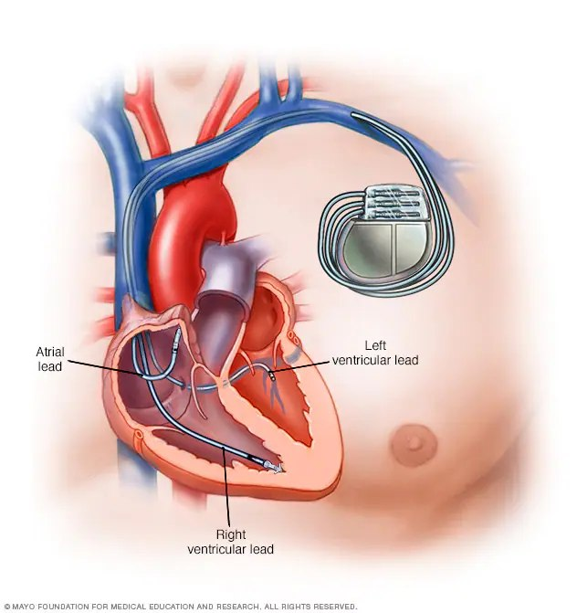
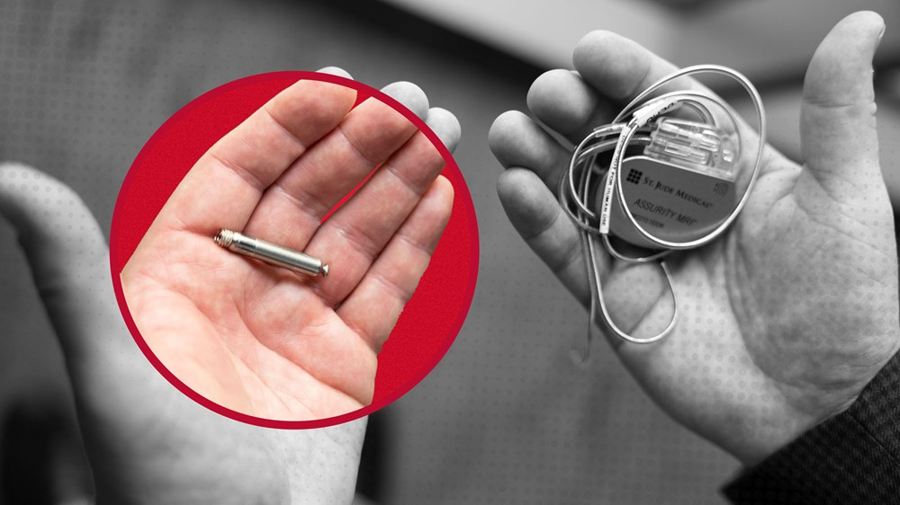
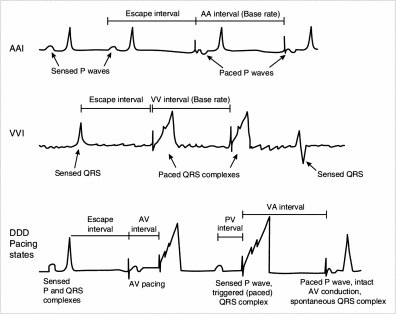
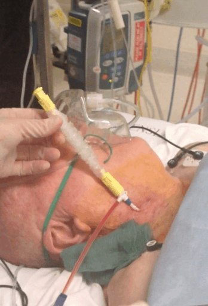
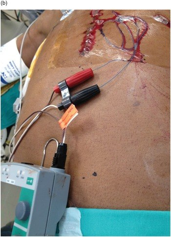
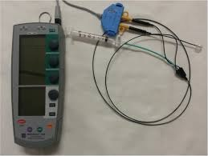

Day 2 · Topic 2
Rhythms & Pacemaker Review
Things to Bring Forward
Earlier Content This Topic Builds On
- Rhythm interpretation: sinus rhythm, sinus arrhythmia, sinus tach, sinus brady, atrial fibrillation (AFib), atrial flutter, PACs (premature atrial contractions), PVCs (premature ventricular contractions), ventricular tachycardia (VTach), torsades, ventricular fibrillation (VFib), asystole. Reading the rate, and a wide or narrow QRS.
- Common causes of dysrhythmias: and caring for the patients who have them.
- Cardiac output: a basic understanding. What the rhythms do to it.
- Treatment for dysrhythmias: the pharmacology, electrolytes, other nursing interventions.
- Amiodarone, beta blockers (metoprolol, labetalol), adenosine, atropine: what each drug is, from the drug matrices.
- Pacemakers and ICDs (implantable cardioverter defibrillators): their restrictions.
Causes Beyond the Heart
Many causes of dysrhythmias are not cardiac. A sick heart is more likely to get rhythm problems, after an MI, ACS or cardiac surgery, but a whole host of other conditions cause them too.
| Rhythm | Ask |
|---|---|
| Sinus tach |
|
| Sinus brady |
|
| PACs, PVCs, short runs of VTach |
|
The causes of each rhythm, cardiac and not, are taught in the Dysrhythmias review
Rhythms and Cardiac Output
Three Pillars of Stroke Volume
| Pillar | What to Know |
|---|---|
| Contractility | Raises stroke volume. |
| Preload | Fluid status: how much fluid is in the left ventricle before it contracts, which depends on its refilling. Raises stroke volume. |
| Afterload | How hard the heart has to push. Raising it lowers stroke volume, and too high or too low, it affects cardiac output. Measured as SVR (systemic vascular resistance). At the bedside, mostly think blood pressure. |
Contractility, and how to raise it, is taught in Cardiovascular Critical Care Issues
Systemic vascular resistance (SVR) is taught in Hemodynamics
What each rhythm does to cardiac output is taught in the Dysrhythmias review
Rhythms and the Other Organ Systems
How Other Systems Affect the Rhythm
- Hypoxemia: severely impacts the cardiac tissue and can precipitate rhythm changes.
- Kidney disease, chronic or acute: raises the risk of electrolyte abnormalities. A hyperkalemic patient has a lot of rhythm issues.
- Uremia and azotemia can also cause rhythm issues.
How Lost Cardiac Output Affects Other Systems
- Respiratory: a patient with a baseline respiratory issue who goes into AFib with RVR (rapid ventricular rate) loses cardiac output. The work of breathing gets so much worse.
- Kidneys: with an AKI, perfusion to the kidneys falls further, and they get worse.
AV Blocks
What an AV Block Means
- Delayed or completely blocked conduction from the SA node to the AV (atrioventricular) node. Also called heart block.
- A big cause of bradycardia: the biggest concern. A second- or third-degree block puts the patient at high risk for bradycardia, with compromised cardiac output.
- Related to age or ischemic disease: seen in post-MI heart failure, or just developing with age.
- Treated with a pacemaker. No medications speed up the heart rate and fix a heart block.
The Four Degrees
1st Degree
The lowest degree.
2nd Degree, Type I
Also called Mobitz I.
2nd Degree, Type II
Also called Mobitz II.
3rd Degree
Complete heart block.
The higher the degree, the more severe: the more impact on cardiac output, and the more symptomatic bradycardia.
Pacemakers and ICDs
Pacemaker
- Helps the heart maintain a normal rhythm, from being too slow.
- Sends low-energy pulses to the heart that make it beat.
- Not placed for a consistent sinus tach.
- Permanent or temporary.
Defibrillator (ICD)
- Prevents or stops a dangerous arrhythmia leading to cardiac arrest.
- Recognizes a dangerous rhythm and sends a high-energy shock to the heart.
- Can serve as a pacemaker: one device can do both. Some patients have a pacemaker alone.
- Permanent only. The temporary version is pads hooked to the Zoll machine.
Who Gets a Pacemaker or ICD
- Damaged heart tissue and a lethal rhythm in the past: usually after a severe MI or severe ischemic or coronary artery disease. Examples: a third-degree heart block, or a run of VTach that needed CPR.
- An underlying rhythm condition, such as Wolff-Parkinson-White, or a genetic condition that raises the risk of dysrhythmias.
- Heart failure past a certain stage of progression: an ICD and pacemaker, for the high risk of a lethal rhythm.
- AV block: a pacemaker keeps the rhythm from being too slow.
Batteries, Generators and Leads
- Internal batteries and generators: most patients will at some point need a generator or battery exchange.
- Leads sit in the cardiac tissue of the right atrium and right ventricle, sometimes the left ventricle, and send low-impulse shocks into it. Sometimes a lead needs replacing.
- Newer devices limit or remove the need for generator and battery exchanges.
Restrictions of Pacemakers and ICDs
- MRI: some are MRI safe, probably all the permanent ones.
- Wave interference: no work with large machinery, such as crane operating or construction, and no work as a mechanic. Can be life-altering.
- Airport: fine. Walk through the metal detector, not the screener.


More restrictions, and what to do when an ICD fires, are taught in the Dysrhythmias review
Pacing and Malfunctions
When a Pacemaker Paces
- The rate is programmed: set by the doctor for the cardiac output needed, such as 70.
- Senses the patient's own beat in the programmed time: does not pace.
- No beat sensed in the programmed time: generates an electrical current and a beat.
- Not felt by the patient. Not painful, unlike being defibrillated.
| Mode | Paces | On the Strip |
|---|---|---|
| AAI | The atria only | An atrial contraction only: a P wave. |
| VVI | The ventricles only | A big QRS complex. Wide after a paced beat, which is normal for a paced ventricular beat. |
| DDD | Both: dual pacing | The atrial and the ventricular contraction: two pacer marks. |

| Malfunction | What It Means |
|---|---|
| Failure to pace | Not pacing appropriately. |
| Failure to capture | A pacer spike, but no contraction generated behind it. |
| Failure to sense | Cannot sense what the patient is doing underneath: whether there are atrial or ventricular contractions. |
Temporary Pacemakers
Transvenous Pacer
- When: a symptomatic bradycardia that needs treating. Example: sinus brady at 40 with a low blood pressure, the cause not yet found.
- How: threaded in through the internal jugular into the right atrium and right ventricle.
Pacer Wires
- When: after cardiac surgery.
- How: sewn into the myocardium. Removed after a number of days.
The Pacer Box
- For temporary pacers. Sets the rate, the sensitivity and the mode: atrium, ventricle or dual.
- Settings follow the order set, with some leeway for malfunctions.
- Check the box, and evaluate continuously whether the pacer is still needed.



Managing Deadly Rhythms
Evaluating the Patient
- Level of consciousness: the first thing seen.
- A set of vitals and an assessment: pale? Breathing normally? Diaphoretic? Blood pressure? Urine in the last hour?
- Is the rhythm real? A patient who does not match the monitor: check the EKG leads.
- Pulse: check it if the patient does not look great. A patient talking to you needs no carotid check.
| The Patient | What to Do |
|---|---|
| No pulse felt, or a low level of consciousness |
|
| Fast rhythm, conscious, with a blood pressure |
|
| Sinus brady |
|
Advanced Cardiovascular Life Support (ACLS)
A code in the hospital is run with ACLS, not the BLS used in the community. A team sport: never done alone.
| Role | What to Know |
|---|---|
| Airway | Respiratory therapy or anesthesia. |
| Push meds | Pushes the emergency meds, such as epinephrine. |
| Time taker | CPR still runs in 2-minute cycles. |
| Compressions | Rotate in and out. |
| Recorder | Writes down everything done. |
| Team lead | Usually the MD. |
| Primary RN | The information person. Does none of these roles once the team is there. May do CPR until someone takes over, then steps back to inform. A student stays with the primary RN. Example: where the IVs are. |
Epinephrine in a Code
- The only known drug to stimulate or restore a cardiac rhythm.
- 1 mg IV push every 3 to 5 minutes, during CPR.
- An alpha-1 adrenergic agonist.
![Flow chart titled Adult Cardiac Arrest Algorithm, VF, pulseless VT, asystole and PEA. Start CPR, give oxygen, attach the monitor or defibrillator, then ask whether the rhythm is shockable. Yes, VF or pulseless VT: shock, then CPR for 2 minutes with IV or IO access, then shock again, with epinephrine every 3 to 5 minutes, then amiodarone or lidocaine and treating reversible causes. No, asystole or PEA: epinephrine as soon as possible, CPR for 2 minutes, and treating reversible causes. A side panel covers CPR quality, shock energy, drug doses, advanced airway, return of spontaneous circulation, and the reversible causes.](images/day2-rhythms-pacemakers/cardiac-arrest-algorithm.jpg)